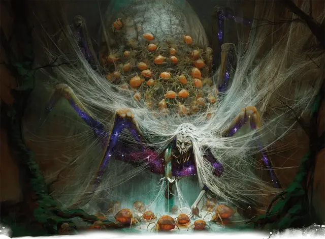

Араста
Arasta
Огромный Монстр, нейтрально-злой, именной НИП

Класс Доспеха 19 (природный доспех)
Хиты 300 (24к12 + 144)
Скорость 40 футов, лазая 40 футов
| мод | спас | ||
|---|---|---|---|
| СИЛ | 24 | +7 | +7 |
| ЛОВ | 16 | +3 | +10 |
| ТЕЛ | 23 | +6 | +13 |
| мод | спас | ||
|---|---|---|---|
| ИНТ | 15 | +2 | +2 |
| МДР | 22 | +6 | +13 |
| ХАР | 17 | +3 | +3 |
Навыки Восприятие +13, Запугивание +10, Магия +9, Обман +10, Природа +9, Скрытность +10
Сопротивление урону дробящий, колющий, рубящий от немагических атак
Иммунитет к урону кислота, яд
Иммунитет к состояниям отравление
Чувства слепое зрение 60 футов, тёмное зрение 120 футов, пассивное Восприятие 23
Языки Общий, Небесный, Сильван
Опасность 21 (33000 опыта)
Бонус мастерства +7
Особенности
Паучий доспех (Мифическая особенность; Перезарядка после короткого или продолжительного отдыха). Если хиты Арасты уменьшаются до 0, она не умирает и не теряет сознание. Вместо этого она восстанавливает 200 хитов. Кроме того, дети Арасты немедленно покрывают её тело, чтобы защитить её, даруя ей 100 временных хитов.
Легендарное сопротивление (3/день). Если Араста проваливает спасбросок, он может вместо этого сделать спасбросок успешным.
Сопротивление магии. Араста совершает с преимуществом спасброски от заклинаний и прочих магических эффектов.
Паучье лазание. Араста может лазать по сложным поверхностям, включая потолки, без совершения проверок характеристик.
Хождение по паутине. Араста игнорирует ограничения перемещения, вызванные паутиной.
МИФИЧЕСКАЯ ВСТРЕЧА с Арастой. Араста - грозный враг при обычных обстоятельствах, но чтобы бросить персонажам поистине мифический вызов, вы можете попросить её призвать свой Паучий доспех. Ее использование этой особенности сигнализирует о резком повороте в сражении, поскольку Араста призывает своих детей-пауков, для собственной защиты.
В то время как у нее есть временные хиты от этой особенности, она может выбрать одно из своих мифических действий, которые она использует как легендарные действия.
Прочитайте или перефразируйте следующий текст, когда Араста использует свою особенность "Паучий доспех":
"Ужасающий арахнид издаёт вопль, который звучит так, словно тысячи паучьих лапок стучат по камням. В ответ земля начинает идти волной и разрывается над монстром, проявляясь в виде волны бесчисленных пауков. Крошечные паукообразные роятся вокруг огромного монстра, окружая его мелькающими телами."
Сражение с Арастой в качестве мифической встречи эквивалентно сражению с двумя существами с ПО 21 в одном сражении. Выдайте группе 66 000 опыта за победу над Арастой после того, как она использует Паучий доспех.
Действия
Мультиатака. Араста совершает три атаки: одну Укусом и две Когтями.
Укус. . Рукопашная атака оружием: +14 к попаданию, досягаемость 5 футов, одно существо. Попадание: 20 (3к8 + 7) колющего урона, и цель должна совершить спасбросок Телосложения Сл 21, получая 32 (5к12) урона ядом при провале или половину этого урона при успехе. Если урон уменьшает хиты существа до 0, то оно стабилизируется, но становится отравленным в течение 1 часа, даже после восстановления хитов. Пока существо отравлено данным образом оно парализовано.
Когти. Рукопашная атака оружием: +14 к попаданию, досягаемость 5 футов, одна цель. Попадание: 17 (3к6 + 7) рубящего урона.
Паутина из волос (Перезарядка 4-6). Араста распускает свои волосы в виде паутины, которая заполняет 30-футовый куб рядом с ней. Паутина является труднопроходимой и слабо заслонённой местностью, и существует 1 минуту. Любое существо, которое заходит в паутину или начинает в ней свой ход, должно совершить спасбросок Ловкости Сл 21. При провале существо становится опутанным паутиной. Существо может использовать действие, чтобы совершить проверку Силы Сл 21. В случае успеха он может освободить себя или существо в пределах 5 футов от него, которое опутано паутиной. Эта паутина обладает иммунитетом ко всем типам урона, кроме магического огня. 5-футовый куб паутины уничтожается, если он получает не менее 20 урона огнём от заклинания или другого магического источника за один ход.
Легендарные действия
Араста может совершать 3 легендарных действия, выбирая из указанных ниже вариантов. Лишь одно легендарное действие может быть совершено за раз, и только в конце хода другого существа. Араста восстанавливает истраченные действия в начале своего хода.
Когти. Араста совершает одну атаку Когтями.
Рой (стоит 2 действия). Араста призывает рой пауков [swarm of spiders] в свободном пространстве в пределах 5 футов от себя.
Ядовитая паутина (стоит 3 действия). Каждое существо, опутанное Паутиной из волос Арасты, получает 18 (4к8) урона ядом.
Мифические действия
Если мифическая особенность Арасты активируется, она может использовать приведенные ниже особенности в качестве легендарных действий, пока у нёе есть временные хиты от её Паучьего доспеха.
Сильный удар. Араста совершает две атаки Когтями.
Паутина из волос (стоит 2 действия). Араста перезаряжает Паутину из волос и использует её.
Плетение Никса (стоит 2 действия). Каждое существо, опутанное Паутиной из волос Арасты, должно преуспеть в спасброске Телосложения Сл 21, иначе существо получит 26 (4к12) урона силовым полем, и любое заклинание 6-го уровня или ниже на нем оканчивается.
Логово
Араста живет в огромном, корявом оливковом дереве под названием Энораз, которое было посажено тысячелетия назад Клотисом. Говорят, что те, кто вкушает его плоды, могут видеть проблески будущего. Однако употребление фруктов сопряжено с риском, поскольку те, кого Клотис считает недостойными, могут сойти с ума. Там, внутри полого ствола Энораса, Араста ждёт следующего потенциального пророка, чтобы приготовить его. Её паутина простирается за пределы ветвей дерева и устилает лесную подстилку её царства.
Путь в Подземное царство. Рассказывают истории о несчастных душах, которые из-за горя или безумия из-за потери любимого человека искали логово Арасты, поскольку ходят слухи, что некоторые нити её паутины закреплены на краю Подземного царства и могут помочь путешественнику достичь пепельных берегов этого царства.
Но те, кто входит в её владения без приглашения, почти никогда не остаются незамеченными, потому что Араста может чувствовать малейшую вибрацию вдоль ее паутины из волос, а её дети действуют как шпионы от её имени.
Действия логова
При значении инициативы «20» (проигрыш при ничье), Араста может совершить действие в логове, чтобы создать один из следующих магических эффектов; она не может использовать один и тот же эффект два раунда подряд:
• Араста узнаёт о любом существе, прикасающемся к её паутине. Каждое существо, опутанное паутиной или Паутиной из волос Арасты, должно совершить спасбросок Интеллекта Сл 21. При провале Араста узнаёт имя существа, расу, место, которое оно считают своим домом, и что привело его в её сети.
• Араста накладывает заклинание гигантское насекомое [giant insect] (только пауков). Оно длится до тех пор, пока она снова не использует это действие логова или пока она не умрёт.
Местные эффекты
Местность вокруг логова Арасты окутана её магией, что создаёт один или больше следующих эффектов::
• Пауки и насекомые в пределах 1 мили от логова Арасты служат её глазами и ушами. Птицы и другие летающие существа отсутствуют в небе, и иногда их можно найти пойманными в паутину.
• В пределах 1 мили от логова Арасты паутина заполняет все 10-футовые кубы открытого пространства, при условии, что паутина может быть закреплена между двум прочным структурам (таким как стены или деревья). Паутина огнеопасна. Любая паутина, соприкасающаяся с огнём, сгорает за 1 раунд. Любая уничтоженная паутина волшебным образом восстанавливается на следующем рассвете.
Если Араста умирает, пауки и насекомые теряют свою сверхъестественную связь с ней. Паутина остается, но она исчезает в течение 1к10 дней.
Описание
Ставшая жертвой мелкого соперничества богов, Араста когда-то была одной из самых любимых спутниц Нилеи-дриад. Горечь Фенакса привела к тому, что она превратилась в паукообразное чудовище и была загнана в самые темные глубины Нессийского леса. Теперь она размышляет о своей несправедливой судьбе и переменчивости богов, которые оставили её проклятым бессмертным чудовищем.
Араста предстаёт в виде гигантского паукообразного существа, её немногочисленные гуманоидные черты лица стали чудовищными из-за жестокой магии и веков ненависти. Паутина заполняет её логово глубоко в Нессийском лесу, липкие нити сделаны не из шелка, а из её собственных бесконечных волос. В своем тёмном царстве Араста размышляет о своей ненависти к богам и их слугам. Однако она делает это не в одиночку, поскольку бесчисленные паукообразные заискивают перед ней, служа ее глазами по всей пустоши, избавляясь от жертв, застрявших в её волосах, и жертвуя собой для её защиты, если это необходимо.